Slow down. Cook with care.
A guide to smokers, temperature monitoring, fire management, and dependable barbecue technique.
Use outdoor cookers only outdoors, away from structures, and follow manufacturer instructions. Use a food thermometer and the official safe-temperature chart; color alone is not a safety test.
Smokers & cookers
Compare fuel, space, ventilation, maintenance, and the level of attention each cooker needs.
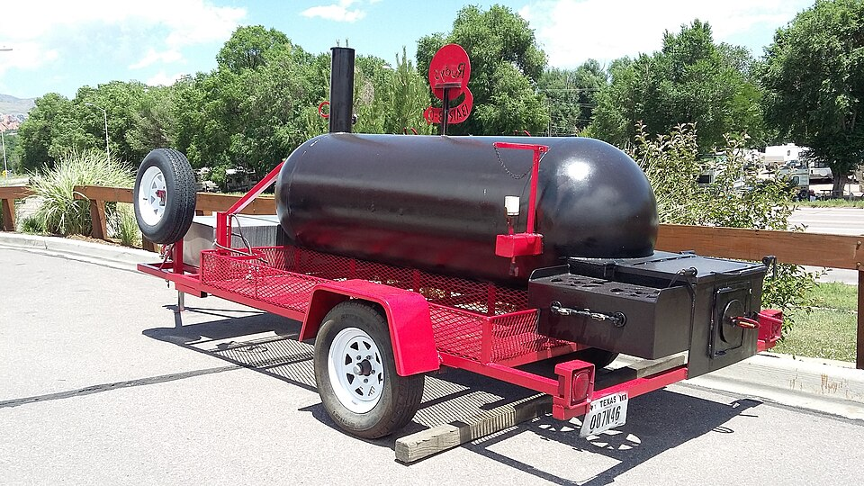
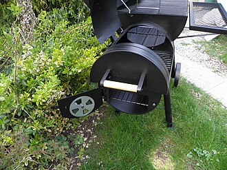
Workhorse Pits
Illustrative smoker, not a Workhorse Pits product.American-made offset smokers.
Open resource ↗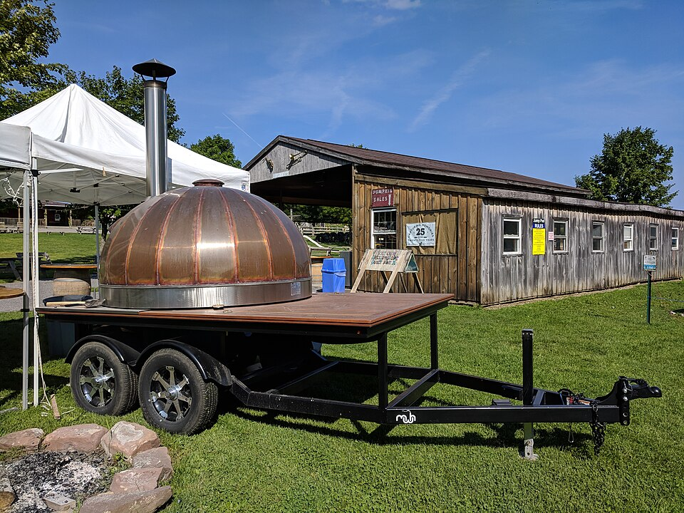
Mill Scale Metalworks
Illustrative smoker, not a Mill Scale product.Offset smokers and outdoor cooking equipment.
Open resource ↗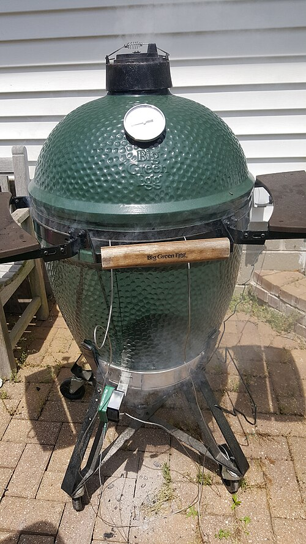
Kamado Joe
Illustrative kamado-style cooker; not a Kamado Joe.Ceramic kamado grills for low-and-slow cooking and higher heat.
Open resource ↗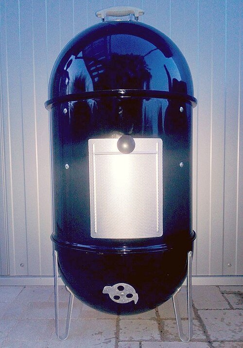
Weber Smokey Mountain
A charcoal bullet smoker for home cooks.
Open resource ↗Temperature & safety
Use reliable probes and check temperatures in the thickest part of the food.
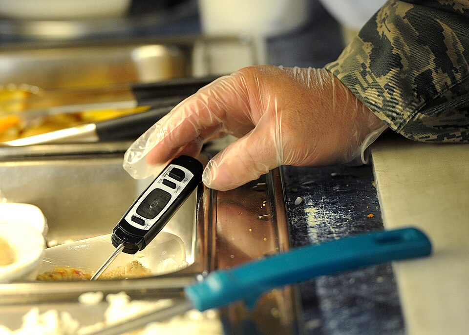
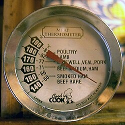
ThermoWorks
Illustrative thermometer; not a ThermoWorks product.Thermapen and multi-channel temperature monitoring tools.
Open resource ↗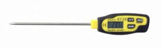
FireBoard
Illustrative thermometer; not a FireBoard product.Temperature monitoring and compatible fan-control equipment.
Open resource ↗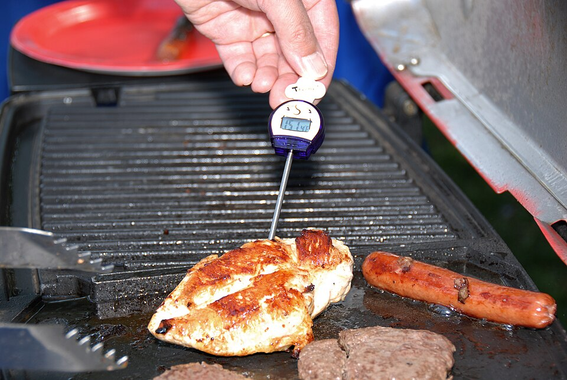
FoodSafety.gov temperature chart
Official minimum internal temperatures and rest times by food.
Open resource ↗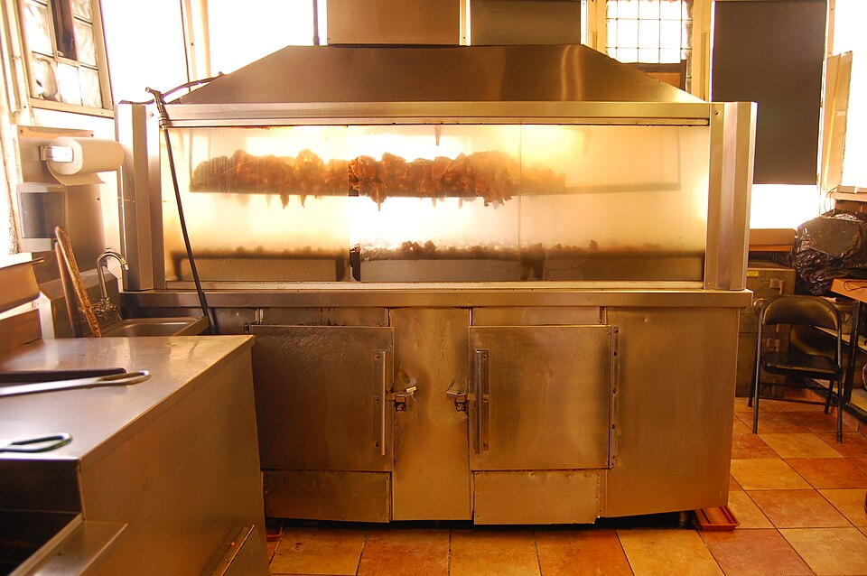
USDA smoking food safely
Illustrative smoker.Guidance on safe handling and smoking meat and poultry.
Open resource ↗Technique & wood
Use clean, seasoned cooking wood: oak is versatile; hickory is assertive; pecan and fruitwoods can be milder. Avoid treated or painted wood.
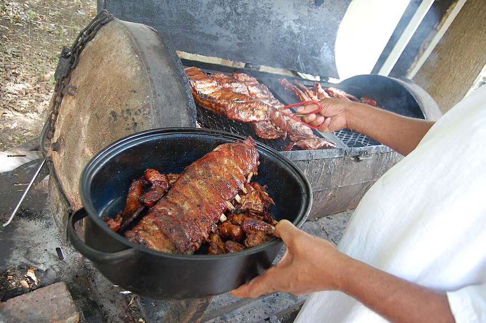
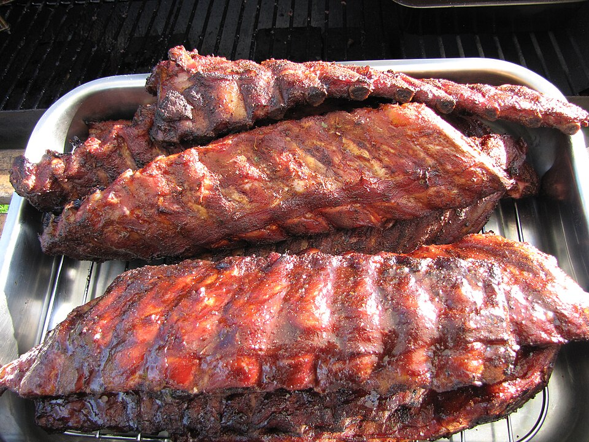
AmazingRibs
Illustrative barbecue.Meathead Goldwyn’s barbecue science, recipes, and equipment guidance.
Open resource ↗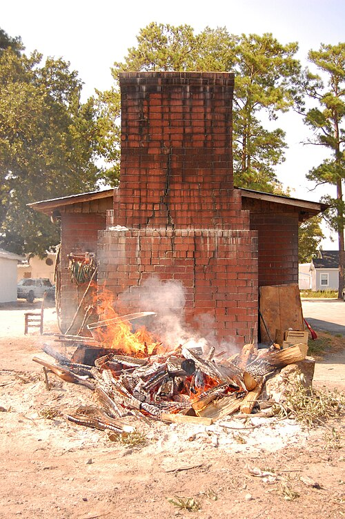
Texas A&M Barbecue Summer Camp
Illustrative barbecue pit; not the camp.University barbecue education and meat-science resources.
Open resource ↗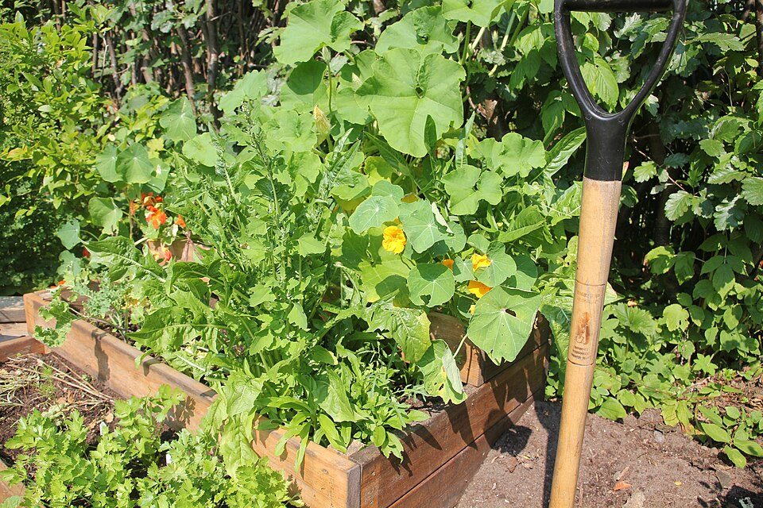
Garden growing guide
Pair outdoor cooking with home-grown vegetables and herbs.
Explore guide →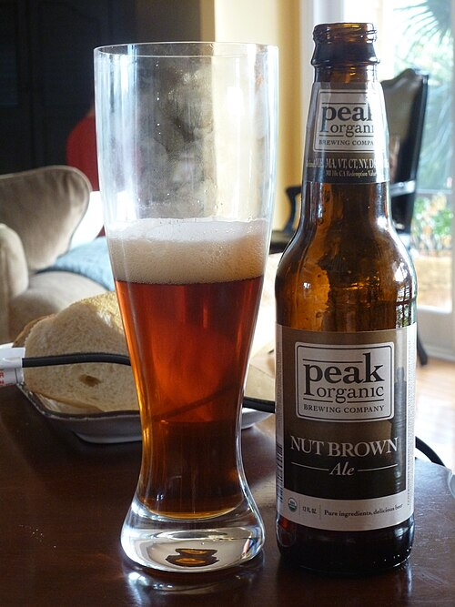
Beer recommendations
Explore beer recommendations and pairings.
Explore guide →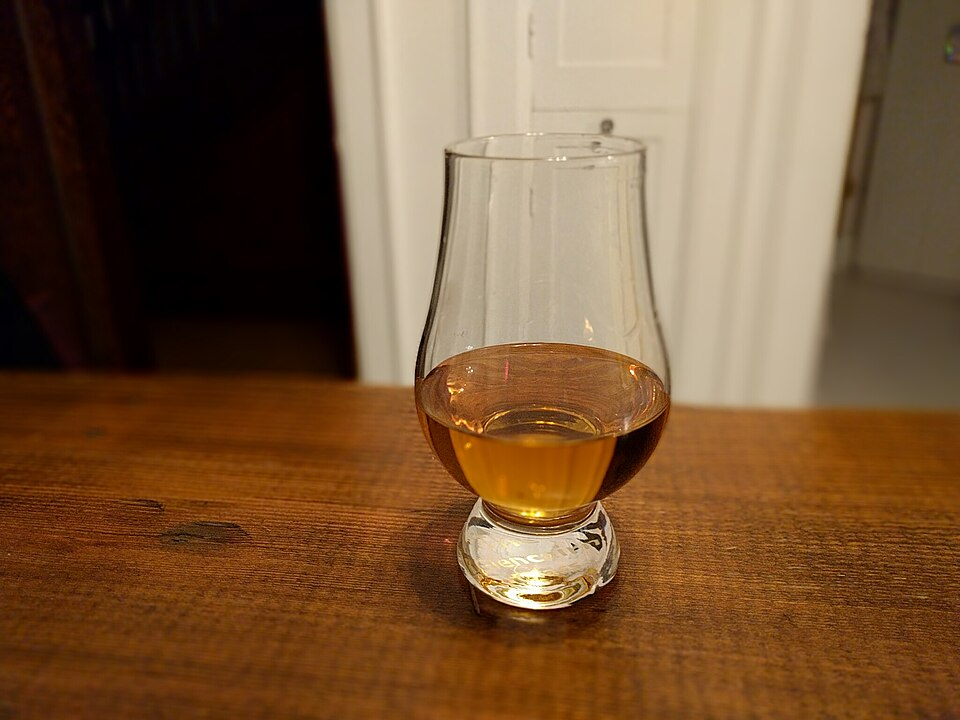
Bourbon recommendations
Browse the bourbon collection.
Explore guide →Photo credits
Images are resized and may be cropped.
- Workhorse Pits: Ra Boe / Wikipedia, Wikimedia Commons, CC BY-SA 3.0 Germany.
- FireBoard: Trotec-gmbh, Wikimedia Commons, CC BY-SA 3.0 Germany.
- AmazingRibs: Thogru, Wikimedia Commons, CC BY-SA 3.0.
- Garden growing guide: Kerstin Namuth, Wikimedia Commons, CC BY-SA 4.0.
- Beer recommendations: Erik Cleves Kristensen, Wikimedia Commons, CC BY 2.0.
- Bourbon recommendations: J Yochem, Wikimedia Commons, CC BY-SA 2.0.
- Long Acre Farms smoker: DanielPenfield, Wikimedia Commons, CC BY-SA 4.0.
- Kamado-style cooker: Corvair Owner, Wikimedia Commons, CC BY-SA 2.0.
- Weber smoker: Thogru, Wikimedia Commons, CC BY-SA 3.0.
- Meat thermometer: Bev Sykes, Wikimedia Commons, CC BY 2.0.
- Food safety camp: USDA, Wikimedia Commons, public domain.
- Aquarium-style smoker: Amy C. Evans / Southern Foodways Alliance, Wikimedia Commons, CC BY 2.0.
- Barbecue pit: Southern Foodways Alliance, Wikimedia Commons, CC BY 2.0.
- Smoker: Xnatedawgx, Wikimedia Commons, CC BY-SA 4.0.
- Food thermometer: U.S. Air Force photo by Airman 1st Class Levin Boland, Wikimedia Commons, public domain.
- Ribs: Southern Foodways Alliance, Wikimedia Commons, CC BY 2.0.


.jpg){kind=link}


.jpg){kind=link}